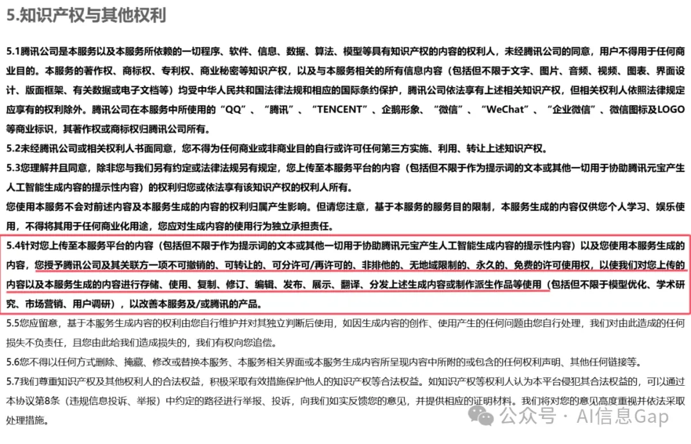

很多互联网公司支持使用满血版DeepSeek，与个人部署的DeepSeek的区别就在用户需要献出自己的手机号码、IP地址、设备信息、聊天记录乃至所有隐私及权利。

准备
下载 Ollama
到Ollama网页下载程序，https://ollama.com/download。
安装 Ollama
以macOS为例，一般情况下直接安装。如果没有图标出现，则需进入/Applications/Ollama.app/Contents/Resources/，打开该文件夹下ollama即可。之后便可通过终端运行ollama -v查看软件版本号。软件支持自动更新，无需担心。
部署 DeepSeek
选择合适的版本
到Ollama资料库查找DeepSeek-r1 https://ollama.com/library/deepseek-r1。DeepSeek可供下载的有一个满血版671b以及六个蒸馏模型，主要区别如下：
- DeepSeek-R1-Distill-Qwen-1.5B，要求内存至少8G；
- DeepSeek-R1-Distill-Qwen-7B，要求内存至少16GB；
- DeepSeek-R1-Distill-Llama-8B，要求内存至少16GB；
- DeepSeek-R1-Distill-Qwen-14B，要求内存至少32GB；
- DeepSeek-R1-Distill-Qwen-32B，要求内存建议至少32GB；
- DeepSeek-R1-Distill-Llama-70B，要求内存48GB以上；
- deepseek-r1:671b，俗称满血版，要求内存512GB以上。
个人电脑使用蒸馏模型即可。
部署 DeepSeek 32B
以DeepSeek-R1-Distill-Qwen-14B为例，在终端执行：
ollama run deepseek-r1:32b
等待安装完成即可。
配置浏览器支持
安装浏览器插件Page Assist，之后便可以通过浏览器运行。
- Github https://github.com/n4ze3m/page-assist
- Firefox：https://addons.mozilla.org/en-US/firefox/addon/page-assist
- Chrome https://chromewebstore.google.com/detail/page-assist-%E6%9C%AC%E5%9C%B0-ai-%E6%A8%A1%E5%9E%8B%E7%9A%84-web/jfgfiigpkhlkbnfnbobbkinehhfdhndo?pli=1
在浏览器中点击Page Assist插件图标，选择模型以及提示词后便可使用DeepSeek。开启网络搜索结果可能会更好。
参数设置
来自官方的推荐参数设置。
- 没有 system prompt
- 温度：0.6
- 参考搜索与文件上传的官方提示
- 减轻模型旁路思维
中文查询
search_answer_zh_template = \
'''# 以下内容是基于用户发送的消息的搜索结果:
{search_results}
在我给你的搜索结果中，每个结果都是[webpage X begin]...[webpage X end]格式的，X代表每篇文章的数字索引。请在适当的情况下在句子末尾引用上下文。请按照引用编号[citation:X]的格式在答案中对应部分引用上下文。如果一句话源自多个上下文，请列出所有相关的引用编号，例如[citation:3][citation:5]，切记不要将引用集中在最后返回引用编号，而是在答案对应部分列出。
在回答时，请注意以下几点：
- 今天是{cur_date}。
- 并非搜索结果的所有内容都与用户的问题密切相关，你需要结合问题，对搜索结果进行甄别、筛选。
- 对于列举类的问题（如列举所有航班信息），尽量将答案控制在10个要点以内，并告诉用户可以查看搜索来源、获得完整信息。优先提供信息完整、最相关的列举项；如非必要，不要主动告诉用户搜索结果未提供的内容。
- 对于创作类的问题（如写论文），请务必在正文的段落中引用对应的参考编号，例如[citation:3][citation:5]，不能只在文章末尾引用。你需要解读并概括用户的题目要求，选择合适的格式，充分利用搜索结果并抽取重要信息，生成符合用户要求、极具思想深度、富有创造力与专业性的答案。你的创作篇幅需要尽可能延长，对于每一个要点的论述要推测用户的意图，给出尽可能多角度的回答要点，且务必信息量大、论述详尽。
- 如果回答很长，请尽量结构化、分段落总结。如果需要分点作答，尽量控制在5个点以内，并合并相关的内容。
- 对于客观类的问答，如果问题的答案非常简短，可以适当补充一到两句相关信息，以丰富内容。
- 你需要根据用户要求和回答内容选择合适、美观的回答格式，确保可读性强。
- 你的回答应该综合多个相关网页来回答，不能重复引用一个网页。
- 除非用户要求，否则你回答的语言需要和用户提问的语言保持一致。
# 用户消息为：
{question}'''
其他支持模型
ollama也可以安装其他模型，在网站可查看支持模型列表 https://ollama.com/library。
参考资料
- DeepSeek Github仓库 https://github.com/deepseek-ai/DeepSeek-R1
- DeepSeek 官方推荐的部署 DeepSeek-R1 最佳设置参数，和官网一样。 https://www.appinn.com/deepseek-r1-deploying-recommended-settings/
- 用M1 Max MacBook Pro私有化部署DeepSeek-R1 https://blog.laoda.de/archives/deploy-deepseek-r1-using-m1-max-macbook-pro
- 腾讯元宝修改用户协议内容引发热议 https://news.iqilu.com/shandong/shandonggedi/20250304/5784371.shtml